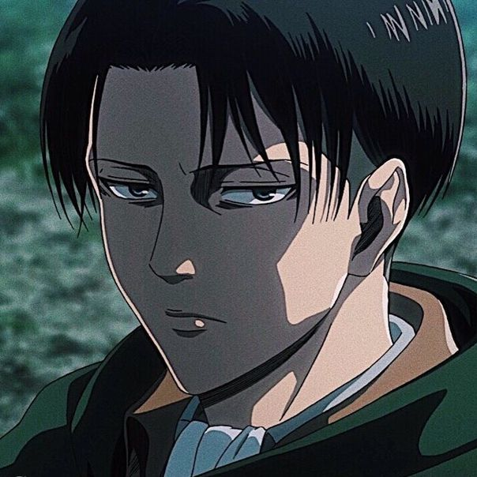

ИсторияТоп самых популярных персонажейИстория создания образа титановМангаПервый титанВооружённый силыРост титанов |
Леви АккерманЛеви Аккерман (リヴァイ・アッカーマン Ривай Аккаман) или Капитан Леви (リヴァイ兵長 Ривай Хэйчо) — капитан собственного отряда Разведкорпуса и широко известен как «Сильнейший боец человечества».  Капитан Леви описывается как «Чистоплюй» теми, кто знает его лично, поскольку Аккерман предпочитает, чтобы его окружение, впрочем как и он сам, были безупречно чистыми. Он не любит пачкаться, а свои, запачканные кровью, клинки, как известно, вытирает, ещё находясь на поле боя. Однако он без колебаний прикоснется к грязи, если сочтет это необходимым. <на главную |